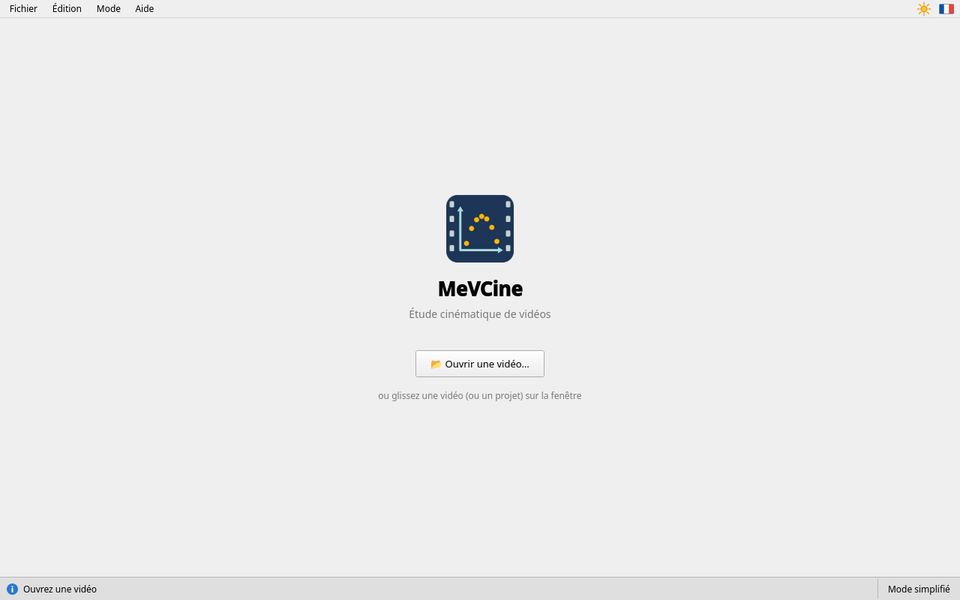
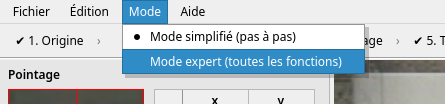
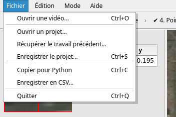

Démarrer
Lancer MeVCine, ouvrir une vidéo, choisir le mode
Lancer MeVCine
Double-cliquez sur MeVCine (ou sur le raccourci préparé par votre professeur). Un écran de démarrage s'affiche deux secondes ; un clic le fait disparaître tout de suite.
MeVCine s'ouvre dans le mode de la dernière fois (le mode simplifié au premier lancement), et propose tout de suite d'ouvrir une vidéo.

Ouvrir une vidéo
- 📂 Ouvrir une vidéo… : la vôtre, filmée avec un téléphone ou un appareil photo (aussi Fichier › Ouvrir une vidéo…, ou Ctrl+O) ;
- ou glissez le fichier de la vidéo sur la fenêtre de MeVCine.
Une grande vidéo met quelques secondes à s'ouvrir : le curseur d'attente s'affiche, et la fenêtre ne réagit pas avant la fin. Patientez.
MeVCine lit les vidéos des téléphones (iPhone, Android) et des appareils photo, même filmées en portrait ou au ralenti. Si la vidéo est couchée, vous pourrez la tourner à l'étape 1. Si un message « Vidéo illisible » s'affiche, demandez à votre professeur, ou voyez la page Filmer un mouvement.
Choisir le mode

- Mode › Mode simplifié (pas à pas) : les six étapes, une par une, pour un seul objet. Pour débuter, et pour la plupart des TP. Voir Le mode simplifié.
- Mode › Mode expert (toutes les fonctions) : plusieurs objets, suivi automatique, trajectoires, grapheur. Voir Le mode expert.
On change de mode à tout moment, sans perdre les mesures (le mode simplifié ne garde que l'objet 1). La barre d'état rappelle le mode, en bas à droite, et MeVCine le retient pour la prochaine fois.
Reprendre un travail

- Fichier › Ouvrir un projet… rouvre un travail enregistré (on peut aussi glisser le fichier de
projet sur la fenêtre) : la vidéo, le repère, l'échelle et les mesures reviennent. La vidéo doit être à côté du
fichier de projet, ou à sa place d'origine. Si MeVCine est installé sur l'ordinateur, un double clic sur le
fichier
.mevcinel'ouvre aussi. - Fichier › Récupérer le travail précédent… rouvre la sauvegarde automatique, après une fermeture malencontreuse ou un plantage. Voir Rien ne se perd sans prévenir.
MeVCine ne rouvre jamais tout seul la vidéo de l'élève précédent : chacun part d'un écran propre.
Les menus
Tout en haut, les menus :
| Fichier | ouvrir une vidéo ; ouvrir un projet, récupérer le travail précédent, enregistrer le projet (vidéo, repère, échelle, mesures, pour continuer plus tard) ; copier pour Python, enregistrer en CSV ; quitter |
|---|---|
| Édition | annuler le dernier point, le rétablir, tout recommencer |
| Mode | mode simplifié ou mode expert, sans perdre les mesures |
| Aide | Notice d'utilisation… : cette notice (F1 : à la page de ce que vous faites) ; À propos de MeVCine… ; À propos de Qt… |
Tout à droite, sur la même ligne :
| ☀ ou ☾ | le thème : clair (soleil) ou sombre (lune). Un clic passe à l'autre ; votre choix est retenu. |
|---|---|
| Drapeau | la langue de l'interface : français ou anglais. Un clic passe à l'autre ; elle est retenue aussi. |
La plupart des boutons expliquent leur rôle quand la souris reste dessus un instant. Les textes sont trop petits, au tableau ou au vidéoprojecteur ? Ctrl++ agrandit toute l'interface, Ctrl+− la réduit, Ctrl+0 la remet à sa taille normale.
Quitter
Fermez la fenêtre, ou Fichier › Quitter (Ctrl+Q). Si vos mesures n'ont été ni copiées ni enregistrées, MeVCine vous le rappelle avant de fermer.